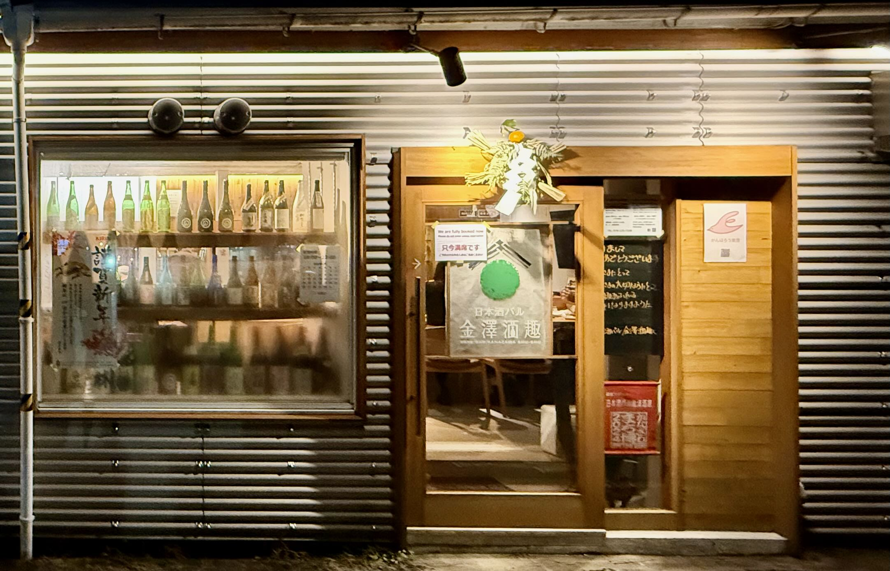

A Kanazawa sake bar run by a former Kikuhime brewer
Kanazawa Shu Shu is easy to miss if you're not looking for it. The bar sits just off one of Kanazawa's main streets. From the outside, the building is understated — silver paneling, two large windows stacked with empty sake bottles, a door with a window advertising a local sake event. At night, the bottles catch the light, giving the place a quiet glow.
Inside, the space is compact: eight stools in a single row, and nothing else. Two large sake fridges stand to the right, another on the left. The setup makes it clear — this is a place built around sake. The man working the bar, Hiromoto Yamagami, greets you with the ease of someone who has been doing this a long time. He used to brew sake at Kikuhime, a prestigious Ishikawa producer founded in 1573, before opening Shu Shu. His approach reflects that experience: no unnecessary frills, just good sake and food designed to elevate it.

The food menu is short. There are cold dishes, a handful of hot options, and a couple of desserts. Everything is built to complement sake.
-
Potato salad with Japanese mayonnaiseA standard at bars like this — simple, familiar, and a good opener.
-
Namerō — minced fish tartareFinely minced fish mixed with miso and ginger. Salty and rich.
-
Amaebi cured in salt — sweet shrimpA regional specialty — a little briny, a little sweet.
-
Iburigako — smoked daikon & cream cheeseEarthy, lightly smoky. Texturally addictive.
-
OdenSlow-simmered fish cakes, daikon, and tofu. Best eaten with warmed sake.
-
Yaki saba — grilled mackerelServed with grated daikon and a few drops of soy sauce.

Sake is the focus, and the menu reflects that. No Juyondai, no Jikon, no brands designed for name recognition. Instead, the selection is largely local — Ishikawa and Toyama producers you're unlikely to find outside the region.
If you're unsure where to start, order a flight. Yamagami-san will ask what kind of sake you like and pick three for you. His list is structured well, breaking sake down into sparkling, sour, sweet, heavy, aged, medium-type, fruity, and light — a straightforward way to navigate styles.
- Aged KikuhimeMade when Yamagami-san was still at the brewery.
- Noguchi NaohikoBrewed by a 92-year-old legend of the industry.
- SōgenSmooth, deeply layered.
- Warm sake selectionsA rarity in many bars, well represented here.
- Aged sakeThe menu boasts many styles.
Shu Shu feels like a bar built for conversation. The seating forces interaction — with Yamagami, the staff, or the person next to you. The mix of customers is about half locals, half travelers. Yamagami-san enjoys sharing stories, sometimes pulling out a book to show photos from his brewing days. The sake here isn't just served — it's explained, contextualized. You leave knowing more than when you arrived.
If you're looking for a sake experience that goes beyond the standard lineup of big-name brands, this is it.